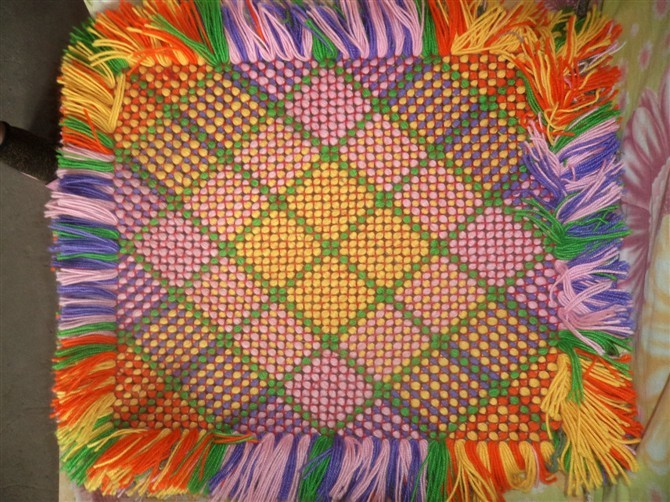
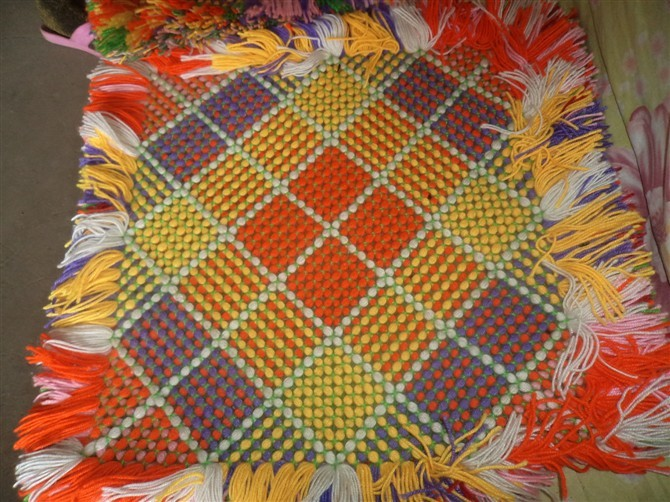

手工制作
首页
抱朴守静
#1 手工制作 作者：蓝天蓝 发表时间：2011-8-23 21:57:02
手工制作


#2 Re:手工制作 作者：梧桐风 发表时间：2011-8-23 21:58:07
 做个五子棋棋盘吧？
做个五子棋棋盘吧？
#3 Re:手工制作 作者：蓝天蓝 发表时间：2011-8-23 21:59:21
毛线的 五子棋 棋盘？
#4 Re:手工制作 作者：微微一笑 发表时间：2011-8-23 22:06:54
拖鞋里面的是...？
#5 Re:Re:手工制作 作者：梧桐风 发表时间：2011-8-23 22:08:30
引用：
原文由 蓝天蓝 发表于 2011-8-23 21:59:21 :
毛线的 五子棋 棋盘？
是啊，看你上面做的格格什么的挺不错的，做个五子棋棋盘也没问题，最好还做一些棋子，教小孩玩多有趣
#6 Re:手工制作 作者：蓝色★眼泪 发表时间：2011-8-24 0:07:15
颜色搭配很好看
这个是不是用钩针勾的？
做棋盘会很好玩
棋子做成小球状 嘻嘻
#7 Re:手工制作 作者：蓝天蓝 发表时间：2011-8-24 11:06:09
不是用针钩的，是有模子的，然后在模子上面绕线，再用线缝一下图形
#8 Re:手工制作 作者：梧桐风 发表时间：2011-8-24 11:34:43
棋子做成球形的不好放啊
#9 Re:手工制作 作者：蓝天蓝 发表时间：2011-8-24 11:39:27
那做成什么样子的棋子呢？
#10 Re:手工制作 作者：掌棋如烟 发表时间：2011-8-25 22:21:58
这是屁股垫么?
#11 Re:Re:手工制作 作者：蓝天蓝 发表时间：2011-8-25 22:30:00
引用：
原文由 掌棋如烟 发表于 2011-8-25 22:21:58 :
这是屁股垫么?
可以这样理解